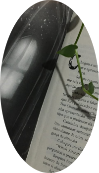

🖤Livros e Mangás

Gosto muito de literatura filosófica, terror, fantasia e livros que falem sobre questões psicológicas e comportamento humano.
🖤Meus Livros favoritos
- A Playlist de Haiden
- A Metámorfose - Franz Kafka
- O Gato Preto - Edgar Allan Poe
- Insasiável
🖤Meu mangá favorito é Berserk.
🖤Quais meus jogos favoritos?